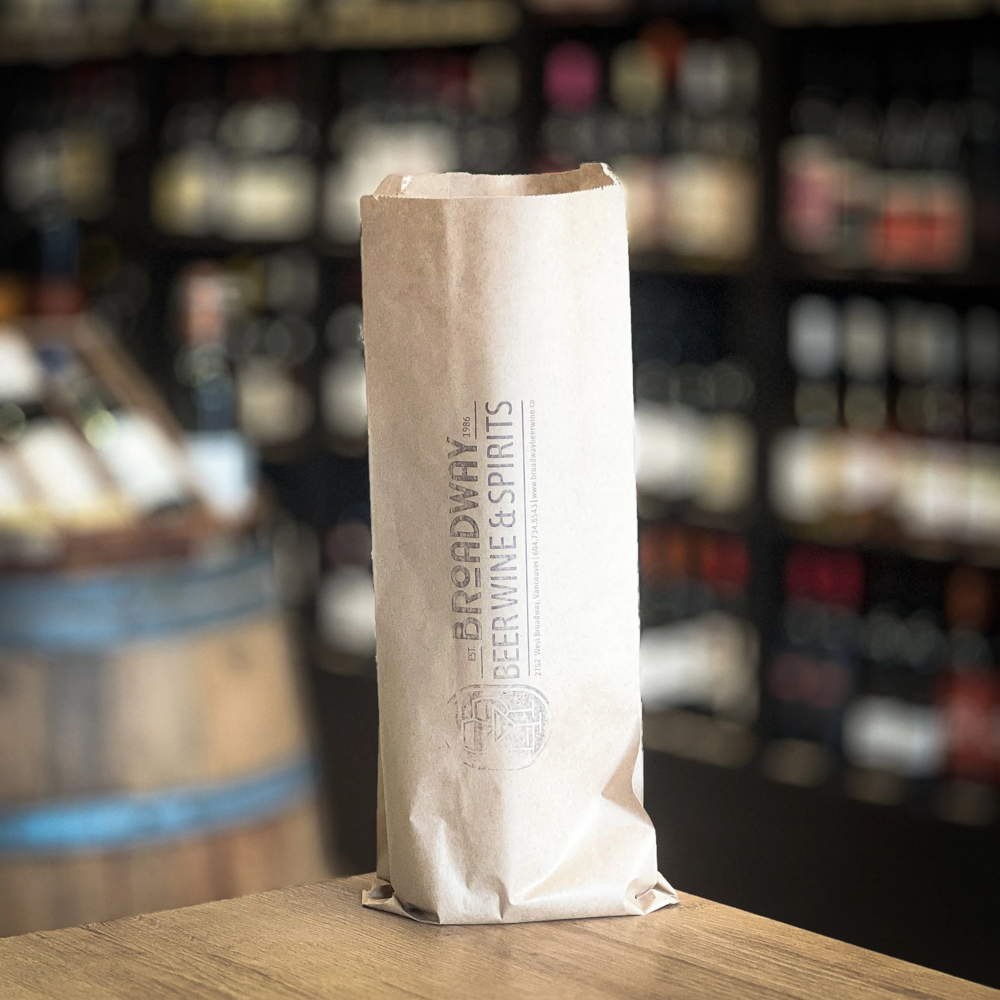

Wine and Spirits Delivery in Kitsilano: Broadway Beer Wine & Spirits

We're at 2752 West Broadway, which puts us squarely in the middle of Kitsilano. If you knew us as a wine shop, you'll find we've upped our game. We now carry over 1,500 selections across wine, beer, and spirits, brought together with the same careful curation the shop has run on since 1986. If you're anywhere in Kitsilano, Fairview, Point Grey, Mount Pleasant, or along the Cambie corridor, we can get a bottle to your door the same day. And if you're anywhere else in BC, we ship via Canada Post.
How to Order
The two platforms we're on are Uber Eats and DoorDash. Search Broadway Beer Wine & Spirits on either app and you'll find us. We deliver within a 10km radius in under an hour.
For province-wide orders, contact us directly at (604) 734-8543 or hello@broadwaybeerwine.ca and we'll arrange shipment via Canada Post.
What We Deliver
Wine
With over 1,200 wine SKUs, wine remains the backbone of what we do. BC VQA is well represented, with a strong focus on Okanagan producers we've sourced directly. We also carry French, Italian, Spanish, and South American bottles across a range of price points, and a rotating selection of Champagne and sparkling. A significant portion of our selection is spec, small-production, or unavailable at the government store, bottles like Antinori Solaia, Spottswoode Estate, Continuum Napa Valley, and Château Haut Bailly that don't show up on a BCLDB shelf. If you've been relying on the government store, there's a good chance you haven't seen half of what we carry.
Beer
BC craft is well represented, with cold cans and bottles from Twin Sails, Parallel 49, Superflux, and others. We also carry import craft, Belgian ales, German lagers, English bitters, and a rotating selection of sours and farmhouse ales that move in and out of the shop. This is not a generic selection. It is a curated one.
Spirits
Whisky is where we spend the most time. Single malts from Scotland, Irish expressions, Japanese whisky, and a growing American bourbon and rye section. We also carry a well-rounded rum, tequila, and mezcal selection, along with gin, calvados, Armagnac, and the kind of bottles that don't show up at a government store. This is the shelf you come to when the standard options aren't enough.
Delivery Area
Local delivery covers a 10km radius from the shop on West Broadway, typically within the hour. That puts Kitsilano, Fairview, Mount Pleasant, Point Grey, Shaughnessy, and the Cambie corridor well within reach. Order via Uber Eats or DoorDash.
Province-wide shipping is available anywhere in British Columbia via Canada Post. If you're in Victoria, Kelowna, Prince George, or anywhere else in the province, contact us at (604) 734-8543 or hello@broadwaybeerwine.ca to arrange an order.
In-Store vs. Delivery
Delivery is convenient. In-store is better if you want advice, want to see the full selection, or want to talk through a gift or a pairing. Our staff knows the inventory. That part of the experience doesn't translate to an app. If you know what you want, delivery is there for you. If you want help finding the right bottle, come in.